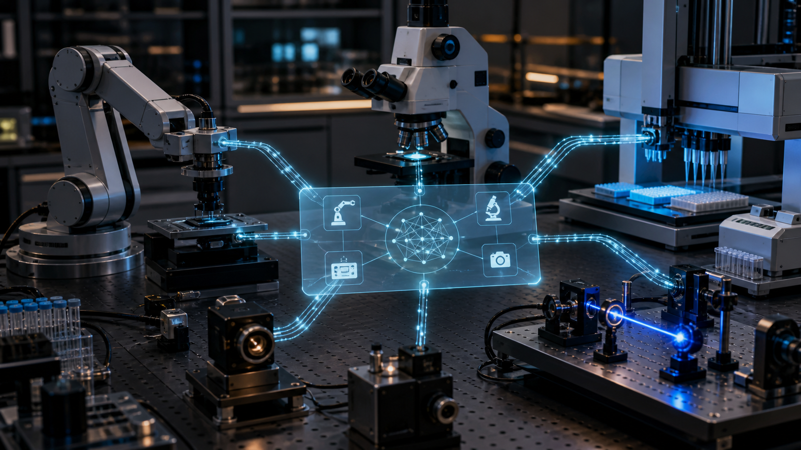

НОВОСТИ · АГЕНТЫ И ФИЗИЧЕСКИЙ МИР
Model Hardware Standard: автоматизация исследовательской лаборатории с AI-агентами
Сначала AI-агенты научились вызывать программные инструменты через MCP. Теперь Anthropic предлагает общий слой для микроскопов, роботов, дозаторов и лазерных установок. Это уже не просто удобная интеграция: ошибка модели может закончиться физическим движением.

Что именно представила Anthropic
27 августа Anthropic открыла ограниченный research preview Model Hardware Standard (MHS). Компания называет его общей спецификацией, через которую AI-агенты могут находить и управлять физическими устройствами: от микроскопов и дозаторов жидкости до роботизированных рук и оптических установок.
Работа началась вместе с исследовательским кампусом HHMI Janelia. Сейчас раннюю версию передают отдельным лабораториям и производителям, чтобы собрать практику эксплуатации и оценки безопасности. Anthropic обещает открыть исходный код позже, но на момент публикации это ещё закрытое исследовательское превью, а не принятый отраслью стандарт.
Почему существующих API оказалось недостаточно
Лаборатория обычно состоит из оборудования разных производителей. У каждого прибора свой API, формат данных, ограничения и способ сообщать об ошибках. Инженерам приходится писать отдельный «переводчик» для каждой связки и затем вручную объяснять управляющей системе, что именно устройство умеет делать.
MHS вводит стандартный драйвер и небольшой набор примитивов вроде read и write. Драйвер описывает доступные измерения и настройки, делает устройство обнаруживаемым в сети и формирует справочный файл с характеристиками, состоянием и ограничениями безопасности. Дополнительный контекст — например, масса роботизированной руки или физический предел температуры — можно задавать через теги на естественном языке.
MHS пытается стандартизировать не интеллект агента, а границу между его решением и реальным устройством.
MCP здесь — только один из входов
Управлять MHS-оборудованием предлагается тремя способами: через Model Context Protocol, командную строку и программные API. Агент может читать состояние нескольких приборов, задавать последовательность операций и менять параметры по мере поступления данных.
Для быстрых или длительных операций модель не обязана размышлять на каждом шаге. В описанном Anthropic сценарии Claude сначала экспериментировал с настройкой лазера, наблюдал результат через камеру, а затем превратил найденную последовательность в детерминированный скрипт. Это важная архитектурная граница: модель ищет процедуру, а повторяемое действие исполняет обычный код.
Что уже показали ранние участники
Anthropic приводит проекты Genentech, лабораторий Университета Вашингтона и Carnegie Mellon, HHMI Janelia, QuEra Computing и Tetsuwan Scientific. В примерах агенты координировали лабораторных роботов, наблюдали за qPCR, корректировали параметры дозирования, анализировали микроскопические изображения и стабилизировали лазерную систему.
Самый показательный эпизод — автоматический повтор эксперимента в Carnegie Mellon. Первый диапазон концентраций дал насыщение сигнала, после чего система снизила максимальную концентрацию и повторила процедуру. Эти результаты описаны участниками preview; независимой сравнительной оценки MHS и альтернативных интеграций в публикации нет.
Где проходит настоящая граница безопасности
У программного агента ошибочный вызов может испортить запись или отправить лишнее сообщение. У физического агента последствия включают столкновение робота, повреждение образца, перегрев, утечку вещества или воздействие лазера. Поэтому разрешение «можно вызвать инструмент» для MHS недостаточно.
Рабочий контур должен отдельно задавать допустимые диапазоны параметров, скорость и область движения, взаимные блокировки устройств, аварийную остановку и действия, требующие подтверждения человека. Эти ограничения должны исполняться ниже модели — в драйвере, контроллере или отдельном safety-слое. Полезная схема уже знакома по программным агентам: модель предлагает действие, а детерминированный контур проверяет полномочия и пределы.
Сама Anthropic признаёт ограничения пространственного и физического мышления Claude. В одном из опытов специалисты Genentech объясняли модели, что пена в образце — физическая проблема, а не программная ошибка. Пока это система с обязательным экспертным надзором, а не универсальный автономный лаборант.
Почему MHS может оказаться важнее очередного релиза модели
Модели меняются каждые несколько месяцев, а интеграционный слой способен жить годами. Если MHS действительно станет открытым и независимым от конкретной модели, производитель оборудования сможет описать устройство один раз, а разные агентные среды — подключаться через общий контракт.
Но стандарт будет ценен только при переносимости драйверов, ясной модели ошибок и проверяемых ограничениях. Пока Anthropic показала направление и ранние кейсы, а не доказала совместимость всего рынка. Следить нужно не за количеством эффектных демонстраций, а за спецификацией, лицензией, тестовым набором и тем, смогут ли сторонние модели безопасно работать с теми же устройствами.
Что проверять после открытия MHS
- отделены ли команды чтения от физически опасных команд записи;
- может ли драйвер жёстко ограничить диапазон и скорость действия;
- есть ли контрактные тесты для состояния, ошибок и аварийной остановки;
- сохраняется ли полный журнал решений агента и фактических команд устройства;
- работают ли одинаковые драйверы с моделями и агентными средами разных поставщиков;
- может ли оператор мгновенно перехватить управление без участия модели.
Источник и продолжение
Фактическая основа материала — анонс и описания ранних проектов Anthropic от 27 августа 2026 года. Заявления о сокращении интеграции и результатах экспериментов принадлежат Anthropic и участникам preview; независимого отраслевого бенчмарка пока нет.
Другие практические разборы AI-агентов и автоматизации — на Agent Lab Journal.
Связанный материал в Дзене: где автономность AI должна останавливаться перед необратимым действием.
Частые вопросы и ответы (FAQ)
❓ Какую ключевую задачу решает подход из материала «Model Hardware Standard: автоматизация исследовательской лаб»?
Материал разбирает практический сценарий внедрения: Сначала AI-агенты научились вызывать программные инструменты через MCP. Теперь Anthropic предлагает общий слой для микроскопов, роботов, доз... Практика позволяет исключить непроверенные гипотезы и выстроить воспроизводимый контур автоматизации с контролем каждого шага.
❓ Как протестировать надежность решения перед запуском в рабочий контур?
Рекомендуется зафиксировать тестовый сценарий с эталонными данными, настроить валидацию граничных случаев и проверять сквозное исполнение через автотесты или логирование вызовов без подмены данных эвристиками.
❓ Как избежать типичных ошибок при масштабировании AI-агентов?
Критически важно изолировать доступы инструментов (принцип наименьших привилегий), ограничить контекстное окно и обязательно предусмотреть процедуру передачи задачи человеку (human handoff) при непредвиденных сбоях.